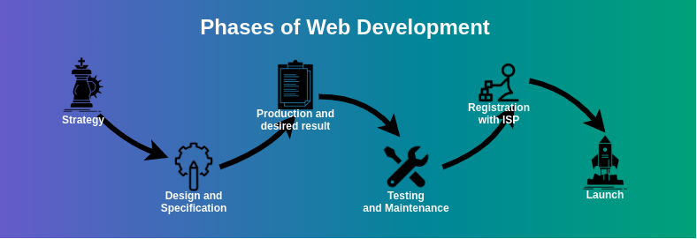
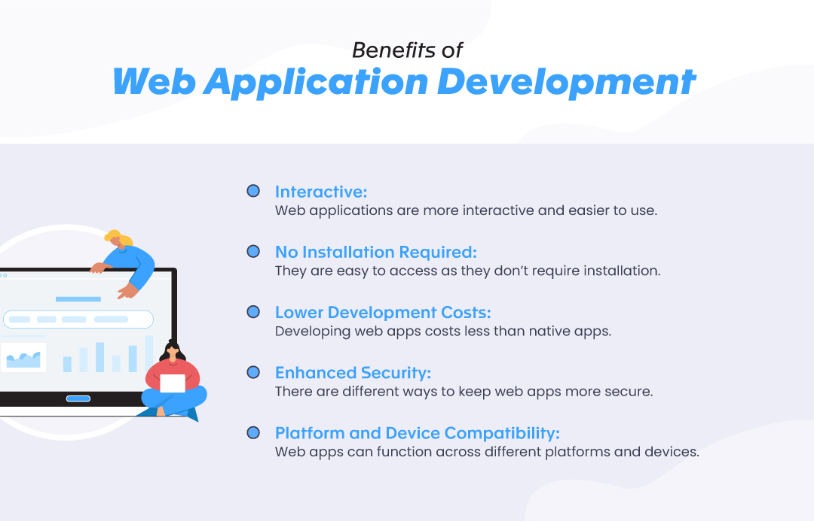
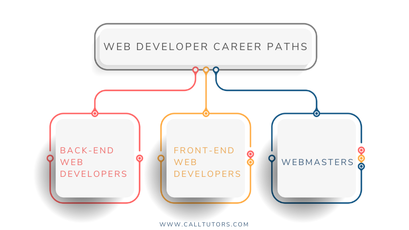
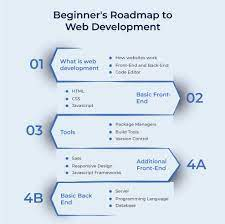

Web development refers to the process of creating and maintaining websites and web applications for the internet. It encompasses a range of activities, including web design, front-end development (client-side), back-end development (server-side), and database management. Web developers use various programming languages, such as HTML, CSS, JavaScript, PHP, Python, and others, to build interactive and dynamic websites that offer seamless user experiences. Front-end developers focus on designing the user interface and implementing functionalities that users directly interact with. Back-end developers work on the server-side, handling data storage, processing, and ensuring smooth communication between the server and the client. They often work in tandem to create fully functional and visually appealing websites. Web development has become critical for businesses and individuals alike, enabling online presence, e-commerce, information dissemination, and communication. With constant advancements in technology, web development continues to evolve, offering innovative solutions and shaping the digital landscape we experience daily.
Web development serves a multitude of essential purposes that have transformed how we live, work, and interact in the digital age. Firstly, it facilitates e-commerce, empowering businesses to reach global markets, showcase products, and enable online transactions. Secondly, web development plays a significant role in social media platforms, connecting people worldwide and fostering communication and information sharing. It also enables online learning through e-learning platforms, making education accessible to a broader audience. Web development empowers the entertainment industry with streaming services for movies, music, and online gaming, enhancing entertainment accessibility. Productivity and collaboration tools, powered by web development, streamline work processes and enable remote work. Moreover, web development supports telemedicine, enabling virtual healthcare consultations and remote patient monitoring. Government websites provide essential services and information to citizens conveniently. Internet of Things (IoT) integration with web development allows for controlling smart devices from afar, improving home automation. Overall, web development's uses continue to expand, revolutionizing various industries and enhancing connectivity, efficiency, and accessibility across the globe.
Web development offers diverse paths for individuals seeking to build a career in this dynamic field. Front-end development focuses on creating visually appealing and user-friendly interfaces using technologies like HTML, CSS, and JavaScript. Front-end developers ensure seamless user experiences and responsiveness across different devices. Back-end development involves working on the server-side, managing databases, server configurations, and handling data processing. Technologies like Python, PHP, Ruby, and Node.js are commonly used for back-end development. Full-stack development combines both front-end and back-end skills, enabling developers to create entire web applications independently. They possess a comprehensive understanding of the entire development process. Additionally, there are specialized paths, such as UI/UX design, where developers focus on creating intuitive and visually engaging interfaces. DevOps involves streamlining the development and deployment process through automation and collaboration. Web development also offers opportunities in web security, ensuring the safety and integrity of websites and applications from cyber threats. Each path in web development demands specific skills and expertise, allowing individuals to choose the area that aligns best with their interests and career goals. Continuous learning and keeping up with the latest industry trends are essential to excel in any web development path.
Getting started with web development can be an exciting and rewarding journey. To begin, familiarize yourself with the core technologies: HTML, CSS, and JavaScript. HTML creates the structure of web pages, CSS handles the presentation and layout, while JavaScript adds interactivity and functionality. Next, choose a code editor suited to your preferences, like Visual Studio Code or Sublime Text, to write and manage your code effectively. Online tutorials, courses, and documentation from reputable sources like MDN Web Docs or freeCodeCamp can be valuable resources for learning. Practice by creating simple projects, such as personal websites or basic web applications, and gradually expand your knowledge and skills. Explore frameworks and libraries like React, Angular, or Vue.js to build more sophisticated applications. Join online communities, like Stack Overflow or GitHub, to seek guidance, collaborate, and share your projects. Embrace continuous learning, as web development is a constantly evolving field, and stay updated with the latest technologies and trends to grow as a proficient web developer.
